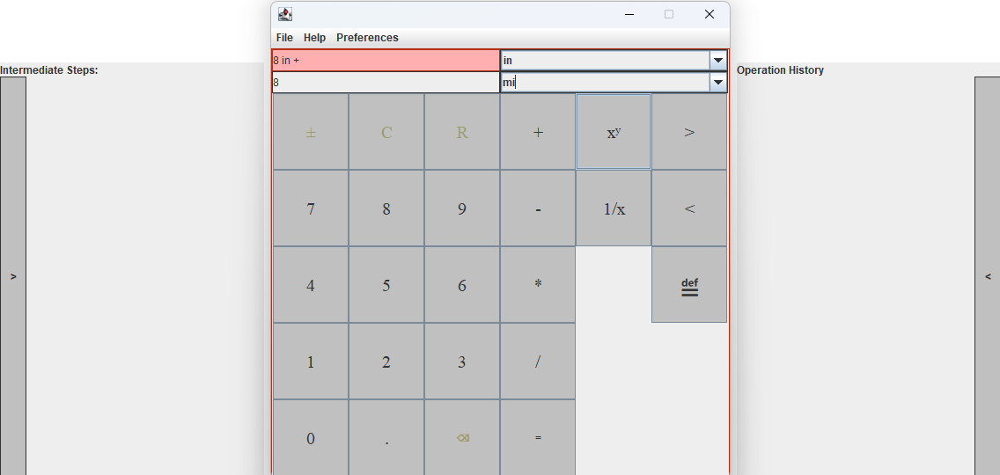

UnitSync
Technologies: Java, HTML, Git, Scrum Management Tool
Duration: Jan. 2024 – May 2024
Project Overview
UnitSync is a GUI-based analytic engine that facilitates unit conversion across a wide range of use cases. The project aimed to enhance user experience by integrating key features such as dynamic language support, customizable user interfaces, and iterative development using Scrum methodology.
Key Features & Contributions
- GUI Development: Spearheaded the creation of a highly customizable graphical user interface, making the tool accessible to non-technical users and increasing user engagement.
- Unit Conversion Engine: Developed a robust engine with extensive unit conversion capabilities, supporting multiple scientific and industrial use cases.
- Locale-based Language Support: Integrated dynamic language support, enabling the application to adapt to different user regions and languages.
- Scrum Leadership: Applied Scrum methodology, leading sprint planning, daily stand-ups, and retrospectives to ensure on-time delivery of features and continuous team improvement.
Development Approach
Using an agile approach, the project was broken down into sprints, ensuring iterative development and continuous feedback. This method allowed the team to prioritize features effectively and meet deadlines with efficiency.
Sample Output
Above is what the gui looks like with the intermediate steps and operation history windows expanded.